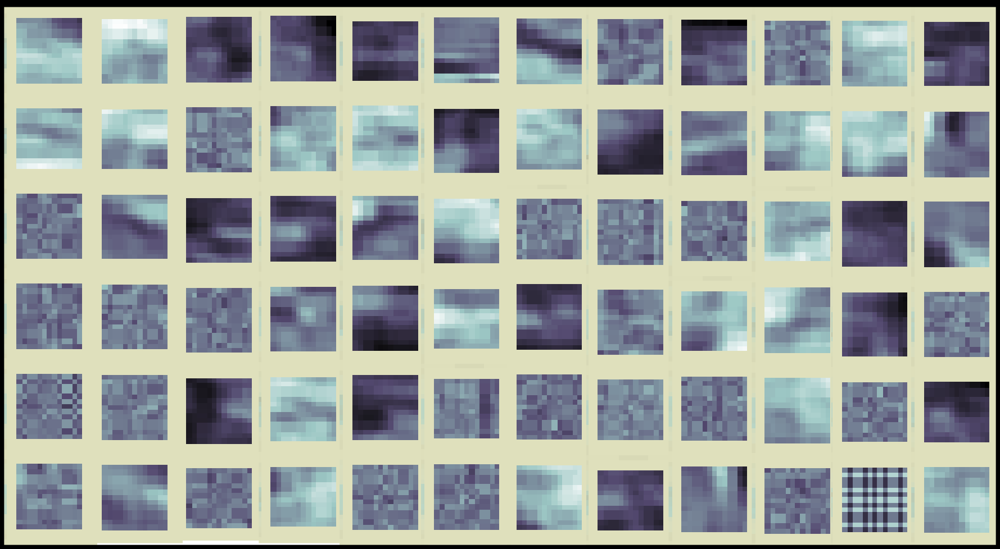

Sparsifying layer for neural networks
This layer type enforces L0 sparsity in node activities by setting all but N node activities to zero.
Method
The mechanism for doing this is a Sparsification layer, implemented in the Cottonwood machine learning framework as an experimental class.
The sparsification layer is initialized with a set number of active notes, N. On each forward pass, the N nodes with the highest activity are left unchanged, and all other node activities are set to zero. Then forward propagation continues with the next layer.
On the backpropagation pass, gradients for all the nodes that had been set to zero are also set to zero before passing them back to the previous layer.
There are a couple of things to keep in mind when using a sparsification layer in a neural network &mdash how to initialize the weights of the next layer and how to modify the gradient during backpropagation.
Initialization
Some weight initialization methods use the number of inputs to the layer or "fan in" to choose appropriate values. If the full number of inputs is M, a sparsification layer effectively reduces the number of inputs to N, the number of non-zero inputs. Initialization methods work best when they account for this.
In He and Glorot initializers, this means adjusting the parameters of the distribution from which the weights are drawn to use N instead of M.
Similarly in the LSUV initializer, this means scaling the distribution by sqrt(M/N). This ensures that with the reduced number of non-zero inputs, the variance of the output nodes will still be near 1.
Sensitivity
Because the nodes with the highest activity are selected on each pass, it's possible that some nodes will only be selected very rarely. These nodes are an untapped resource. They have the potential to represent structure in the data that would otherwise contribute to the error. However, because they are selected so rarely it takes them a long time to train. This is particularly the case for rarely occurring patterns in the data.
In order to speed up this process of learning rare patterns, nodes that haven't been selected in a while develop a sensitivity, meaning that when they are finally selected, they adapt more readily during backpropagation. In this way, they can migrate to where they can do the most good, even though the patterns they represent might be uncommon.
Sensitivity, s, is a multiplicative factor on the gradient on a node-by-node basis. It starts at 1, and gradually increases toward an upper limit, s_max, with each time step the node is not selected. The adaptation occurs with a time constant of tau. At each time step, the new sensitivity for unselected nodes, s_new, is a function of their previous sensitivity, s_old:
s_new = s_old + (s_max - s_old) / tau
Empirically, s_max = 10 and tau = 100 have proven to work well, but it's possible that other values may work even better.
Example implementation
We can see qualitatively how the sparse layer changes the features that a network learns by looking at an autoencoder. In a case study using an autoencoder to compress images from Mars, there is a ready-made testbed. The file sparse_compressor.py has the code used for this demonstration.
The autoencoder used takes an 11 x 11 pixel patch (121 pixels), and passes it through 2-layers, a 256-node hidden layer and a 121-node output layer. The representation of each hidden node was found by setting its activity to 1, and the activity of all other hidden nodes to 0, and observing the output pixel activity that resulted. For more details on the architecture and its implementation, please refer to the README in the case study code.
The autoencoder was trained on 10 million image patches under two different conditions. In the dense condition, all 256 of the hidden nodes were updated on every iteration. This is standard procedure. In the sparse condition, only the 9 nodes with the highest magnitude activities were allowed to stay active. The rest were set to zero.
The output representation of a few nodes from the hidden dense layer. The nodes are information-dense, but visually indistinct. They look like static.

The output representation of a few nodes from the hidden sparse layer. Many of the hidden nodes took on clear spatial patterns.
The differences between the two sets of hidden node representations is striking. In the sparse layer, the patterns became identifiable and varied in spatial frequency, complexity, and orientation.
With convolutional layers
When you're working with a convolutional neural network, there's an alternative way to apply sparsity. Instead of choosing just N non-zero values from the entire layer's output, you can choose the output of N channels at each position in the image or signal. This method is implemented in Cottonwood's SparsifyByChannel2D block.
Motivation
Neural networks are very flexible, because they have so many parameters that can be adjusted. Sometimes it feels like too many. It’s like having a wall full of knobs for adjusting the sound in the recording studio, only some of the knobs do the same things as others . Sometimes, it’s nice to simplify it a little bit — to reduce the number of knobs you have to adjust.
In neural networks this is achieved through regular position. Regularization is the mathy way of nudging the solution in a particular direction, in this case in the direction of having fewer knobs to adjust. If we can take a fraction of those parameters and set them to zero, then we can put Scotch tape over those knobs and pretend they don’t exist. This flavor of regularization is a trick to set as many of those knobs to zero (or at least a small value) as we can without hurting performance.
This is regularization for sparsity, sparsity being the state where lots of values are set to zero, and the nonzero values then become rare, sparse. The most common types of regularization operate on the weights in a neural network. They aim to make weight values small or zero. They are called L1 regularization, also known as ridge regression, and L2 regularization, also known as LASSO or least squares regression. L1 and L2 refer to the proper mathematical names of the function norm that is used in each of these.
Although having sparsity in the weights is desirable, having sparsity in the node activities is even better. It is more theoretically interesting, because it suggests that only part of the network is working at any given time, and it’s of practical interest, because it can be used to reduce the computations that have to be made.
Sparsity in node activities is a type of group sparsity. It’s not a quantity that we get to adjust directly during backpropagation, but one that emerges through a combination of many weights and previous layers' activities.
L1 and L2 node activity sparsity regular station has been presented previously. Here, I propose a method for L0 node sparsity, that is, keeping the number of active nodes low.